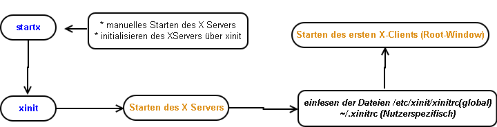

Created Montag 19 September 2011
- stellt die grafische Betriebsumgebung zur Verfügung
- Im Gegensatz zum Windowskernel ist das grafische System nicht Teil des Kernels bei LInux/Unix Betriebsystemen
- Xorg (X11R7 X11R6) und XFree86 (X11R5) sind Implementierungen des X11 Systems
- Accessellartet X ist eine kommerzielle Implementierung des X-Servers
- wesentliche Unterschiede gibt es zwischen X11R6 und X11R7 in der Verwaltung der Konfigurationsdateien
- X11 ist ein Client-Server System
- X11 Protokoll bietet eine Methode zur Übertragung grafischer Grundoperationen
- X-Server stellt Schnittstellen und Eingabegeräte zur Verfügung, die mit den Clients kommunizieren können
- X-Clients-Anwenderprogramme schicken X-Server Grundbefehle über das X11 Protokoll Steuerungsbefehle
- X-Server schickt Ereignisse an die X-Clients zurück
- X-Server und X-Clients können dabei auf verschiedenen Rechnern laufen und über Netzwerk kommunizieren
- X-Server sendet seine Ereignisse auf tty7 bis tty12 (bei $SUSE$ ist tty10 für die Ausgabe von Kernelmedlungen reserviert)
Verwalten von Xhosts
- xhost zum Verwalten von Zugangsbeschränkungen
- xauth zum Verwalten des vom X-Server vergebenen MAGIC-COOKIE
Linux Wissen:X11:X-Displays
Fenstermanager
- X-Clients öffnenn Fenster über die Sie mit dem X-Server kommunizieren
- Hierrarchie von Fenstern beginnt beim Toplevel Window
- Diese Aufgabe wurde vom Fenstermanager übernommen
Anforderungen:
- mind 12 MB RAM
- mind 800 x 600 VGA Grafikkarte
- eine Tastenmaus mit mind. 2 Tasten. Die dritte kann durch herunterdrücken beider Tasten emuliert werden
Wieviel Video RAM benötigen meine Einstellungen
- R=(x*y*bpp)/8.388.608
X-Server über einen Displaymanager starten
FHS:etc:X11++xdm
Linux Wissen:FHS:etc
*~/.xsessions → Konfigurationsdatei für Nutzerspezifische Einstellungen beim Starten einer Client-Server Session
~/.xsession-errors → Fehlerlog für die X-Session des aktuellen Nutzers
Starten der grafischen Oberfläche
- das Zusammenspiel zwischen X-Server und X-Clients bezeichnet eine X-Session

Beispiel:
sudo startx -- :1 → mal schnell eine X11 Session als root starten
Konfiguration von X Resourcen
- Einstellungen die der X-Server speichert und von diesem bereitgestellt werden
- werden bei Bedarf vom X-Clients abgeholt und ausgewertet
- /etc/X11/apps-default/<Name> → stellt X Resourcen für das Programm <Name> zur Verfügung
Konfigurieren der Tatstatur
- /etc/X11/Xmodmap |~/.Xmodmap → Konfigurieren des Tastaurlayouts für den X-Server
Konfigurieren von Fonts
- Setup erfolgt entweder über die Konfigurationsdatei in der Section "Files" oder durch die Konfigruation eines zentralen Font-Servers
- Verezichnisse: /usr/share/fonts, /usr/share/X11/fonts, /opt/fonts, /usr/local/fonts
- Endungen: .pfa, .pfb
Informationen über X
xwinfinfo → zeigt Informationen über Auflösung und Farbtiefe des X-Clients
-root → Informatioen für das root-Window anzeigen
-display → Informationen für diesen X-Server
xdpyinfo
→ Zeigt Informationen über den X-Server
→ Ermittele die Fähigkeiten eines Servers
→ damit lässt sich Auswerten welche Einstellungen vom X-Server unterstützt werden
Virtuelle Bildschirme mit Xnest erstellen
- ermöglicht es zum Beispiel kde/gnome parallel laufen zu lassen
- Xnest <Display> → eine neue Xsession in der bereits bestehenden einbinden, die Session wird in einem Extrafenster gestartet
export DISPLAY=:1; icewm --replace --display=:1
→ starten des icewm innerhalb einer bestehenden Session
Workflow: Konfigurieren des X-Servers
__Achtung: Nividia kommt mit einem eigenen Konfigarationstool nvidia-settings und kann nicht über Xorg konfiguriert werden.__
(1) init 3 oder /etc/init.d/xdm stop ausführen, um die aktuelle X-Session anzuhalten
(2) Mit dem Befehl Xorg -configure einer Konfigurationsdatei /root/xorg.conf.new
(3) Anpassen der Konfigurationsdatei
(4) Testen der Konfigurations mittels Xorg -configure /root/xorg.conf.new testen
(5) verschieben der Datei mv /root/xorg.conf.new /etc/X11/xorg.conf
(6) neustarten des Xservers mittels init 5 oder /etc/ini.d/xdm start
Linux Wissen:FHS:etc:Xorg.conf
Linux Wissen:X11:xset
Workflow: X Clients nutzen
(1) Login und Start X
(2) xhost +<Remote-Host>
(3) Via ssh auf <Remote-Host> einloggen
(4) auf dem <Remote-Host> export DISPLAY=<Client>:0.0
(5) Starten des Programms
(6) xhost -<Remote-Host> um die Sicherheit des Systems zu Gewährleisten/ude